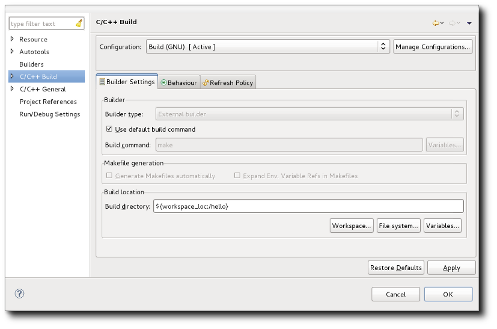
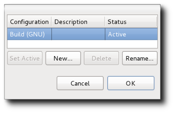
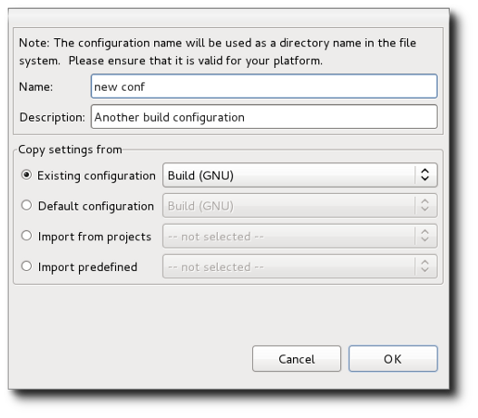
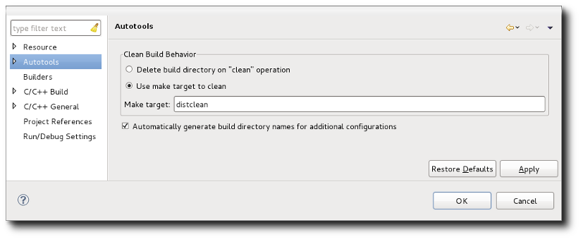

| Building | ||
|---|---|---|
|
|
|
|
| Special Editors | Make Targets | |
As mentioned, an Autotools project is an extended CDT Makefile project. Building the project is done the same as for any Makefile project. You can kick off a build manually by clicking on the Project -> Build Project menu item or if you choose, you can set up builds to occur automatically when resources are changed by checking off the Project -> Build Automatically menu item. The former build option is disabled when automatic builds are selected. By default, a make all is performed following the Autotools configure step.
The build is performed on the active build configuration. A build configuration is a CDT construct which is a group of settings for a particular build. This is not to be confused with an Autotools configuration which is just the settings passed to the configure script. The CDT build configuration is saved across Eclipse sessions and includes environment variable settings, build macros, build location, tool settings, etc... used to perform a build. A project may have multiple build configurations. For example, a build with debugging info and a regular optimized build. As such, one configuration is designated the active configuration and as previously stated, is the one used for the build.
The Autotools configure script parameters and the autogen.sh script parameters are treated as part of the CDT build configuration. While CDT settings are stored in the .cproject file within the project, the Autotools parameters are stored in a special file: .autotools. There is a one-to-one mapping of Autotools configuration parameters to a build configuration. By default, each Autotools project starts with a base build configuration named Build (GNU) which configures and builds in the top-level project directory. This is common for Autotools projects to have the user configure and build directly in the top-level source directory. The location of the build can be changed in the C/C++ Build properties:

Notice how the default is ${workspace_loc:/xxxx} where xxxx is the project name. This represents the project's location which may or may not be physically under the workspace root directory. To change the build location, it is recommended that you add a directory following the project location: e.g. ${workspace_loc:/xxxx}/yyyy.
It should be noted that the configure script automatically checks to see if a configuration has been performed in the source directory. It does so by looking for the config.status file existing in the same directory as the configure script. If configuring in a different directory and the configure script finds config.status in the source directories, it will stop and report a failure. Such is the case if you originally configure and build the default configuration and either change the build location or add a new configuration later and try to build it. The second configuration fails and recommends running make distclean first. A make distclean performs a clean and in addition removes configuration files such as config.status. The Autotools plug-in recognizes when this situation is about to occur during the configure step and will automatically issue a make distclean on your behalf to avoid the failure. The cleaning operation is recorded in the Configure console. Since it also removes build artefacts for the default configuration, these may have to be regenerated by a future configure/build with the default configuration marked active. If you know you will be creating multiple configurations for the project, you can either specify the default build location to something other than the top-level project directory or else you can avoid using the default configuration and only build configurations you have added yourself.
CDT build configurations are managed via the Managed Configurations dialog. The dialog is accessed via a button that can be found on any property page that alters data that is part of the build configuration. This includes the Project -> Properties -> Autotools -> Configure Settings page. Pressing the button results in the Manage Configurations dialog:

From the dialog, it is possible to create a new configuration, rename a configuration, delete a configuration, or set a particular configuration as being the active one. Deletion is disabled when there is only one configuration. Likewise, if there is only one configuration, it is active by default. When you choose to create a new configuration (hit the New... button), you are given a number of choices. You can:

Copying a configuration copies all of its settings, including the Autotools configuration parameters. Copying all settings would normally include the build location (the directory where the build will be performed), but the Autotools plug-in, by default, intercedes and for every new configuration subsequent to the initial one, it sets the build location to build-xxxx where xxxx is the unique configuration name. The Autotools plug-in replaces any white-space in the configuration name with underscores so it is possible if you have named two configurations similarly with different white-space characters or one with underscores that you might result in a build location collision. The replacement of white-space is done because the build directory will get placed in the generated Makefile where white-space is used as delimiters and undefined behaviour would therefore occur. The automatic build directory naming behaviour can be turned off from the Project -> Properties -> Autotools page, but it is discouraged since switching between different configurations and building in the same directory can cause undefined behaviour.

Note: changes to configurations are not performed unless the Ok or Apply buttons are pressed from a Property page with the Manage Configurations button on it. That is, pressing Ok from the Manage Configurations dialog does not make the changes permanent. You could add new configurations, delete others, and then hit the Cancel button from the corresponding property page and the changes would be reverted.
|
|

|
|
| Special Editors | Make Targets |